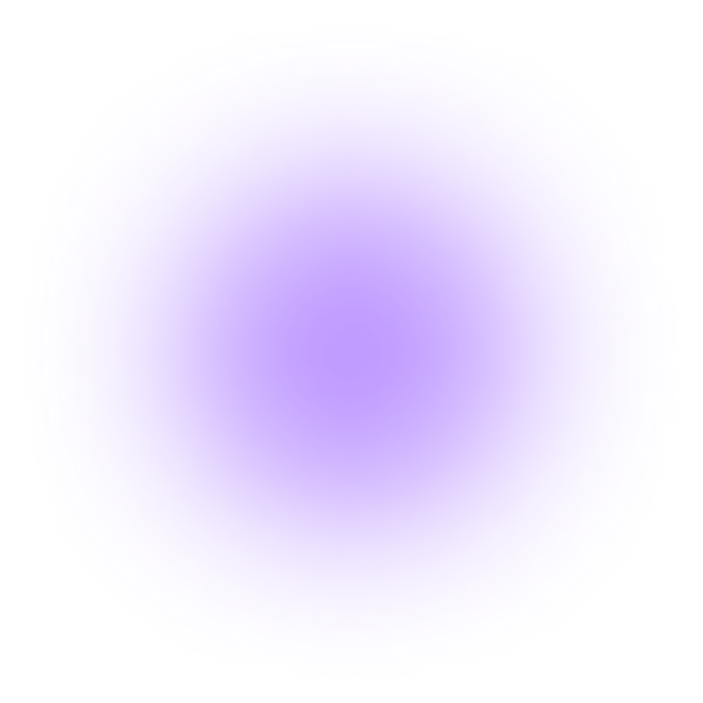

Информационный шум и постоянные уведомления крадут твой главный ресурс — внимание. Эта комната создана для того, чтобы вернуть контроль над своими мыслями. Сделай паузу. Выключи уведомления, закрой лишние вкладки и просто понаблюдай за движением круга. Синхронизируй свое дыхание с его ритмом: плавный вдох во время расширения, глубокий выдох при сжатии. Всего три минуты осознанного дыхания снижают уровень стресса, перезагружают мозг и помогают сфокусироваться на одной, самой важной задаче. Начни прямо сейчас. Наведи курсор на круг.
